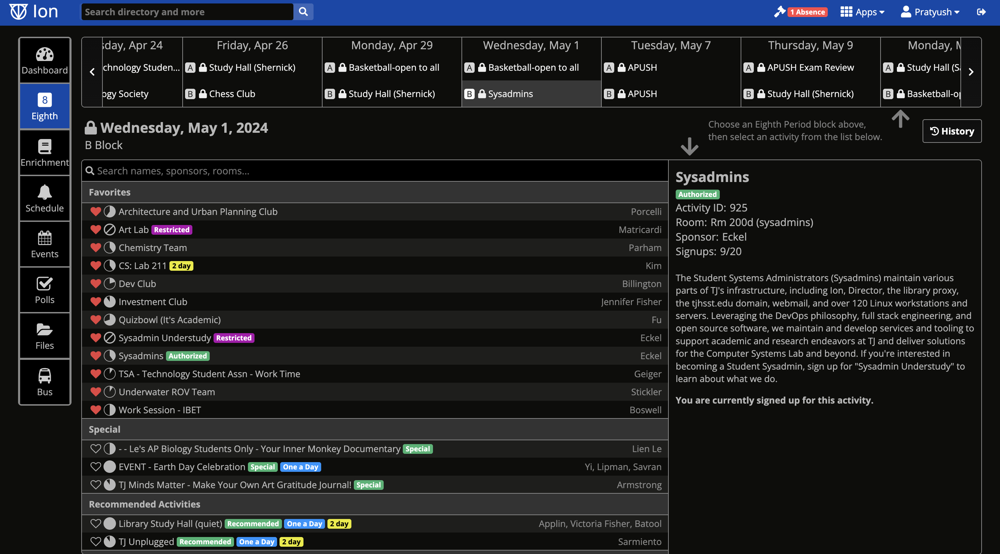

As a Sysadmin, I have learned fundamental skills regarding web development and maintenance. I have also had the opportunity to work with advanced hardware, such as a high performance computing cluster gifted by NASA.
The Student Systems Administrators team (Sysadmins) at my school, Thomas Jefferson High School for Science and Technology, is made up of 16 students. We maintain the school’s intranet, webmail, and various other services.
These resources are crucial in the everyday functioning of the school, such as for students to sign up for clubs using the intranet or for teachers to grade computer science assignments with the AI grader. To become a Sysadmin, students first apply to become understudies; in this program, they shadow current Sysdamins and expand their knowledge regarding various topics, such as different aspects of software and hardware.

As a Sysadmin, I have learned fundamental skills regarding web development and maintenance. I have also had the opportunity to work with advanced hardware, such as a high performance computing cluster gifted by NASA.
During my freshman year when I applied to be a sysadmin, 8 out of 73 applicants were selected. Since then, I have contributed to the team and currently hold the position of Documentation Co-Lead. My responsibility includes maintaining documentation of systems in the lab for future sysadmins to reference. However, I also contribute to the other teams, such as by updating the software of outdated workstations around the school.